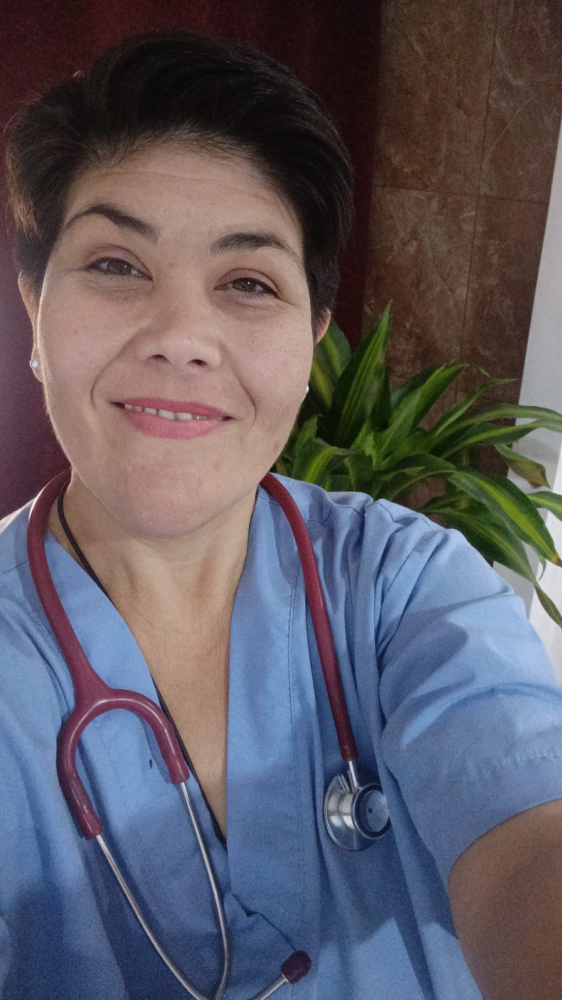

01
Medicina familiar
Consultas programadas para problemas frecuentes, controles y seguimiento en cada etapa de la vida.
ConsultarAtención médica integral, cercana y basada en evidencia para que cada decisión sobre tu salud se sienta clara, humana y compartida.
Una mirada integral
prevención, diagnóstico y seguimiento


Soy la Dra. Vanesa Klimaszewski, especialista en Medicina General y Familiar. Mi práctica parte de una idea simple: para cuidar bien, primero hay que escuchar.
Trabajo en la prevención, el diagnóstico y el tratamiento de enfermedades agudas y crónicas, considerando no sólo los síntomas, sino también tu contexto personal, familiar y emocional.
Escucha activaConsultas con tiempo y claridad.
Evidencia científicaDecisiones médicas fundamentadas.
Seguimiento realContinuidad más allá de una consulta.
Atención integral para acompañarte con cercanía, desde una consulta puntual hasta el seguimiento de condiciones crónicas.
Consultas programadas para problemas frecuentes, controles y seguimiento en cada etapa de la vida.
ConsultarPrevención, diagnóstico y acompañamiento personalizado para vivir mejor con diabetes.
ConsultarAtención como médica de cabecera, con una mirada integral y continuidad en el cuidado.
ConsultarUn espacio de consulta sin apuro, centrado en tu historia, tus síntomas y tus prioridades.
ConsultarSeguimiento médico a distancia, de forma simple y segura, cuando no necesitás un examen presencial.
ConsultarVisitas programadas en la zona de Tigre para pacientes con dificultad para trasladarse.
ConsultarUn proceso simple para que entiendas qué pasa, qué opciones tenés y cómo seguimos.
Tu historia, tus síntomas y lo que hoy te preocupa.
Con criterio clínico, examen y estudios cuando corresponda.
Con un plan compartido y seguimiento sostenido.
Una trayectoria dedicada a comprender la salud en todas sus dimensiones y acompañar a cada paciente con profesionalismo.
Hablar con la doctoraMédica, Facultad de Medicina · UBA
Especialista en Medicina General y Familiar
Máster en Diabetes
Máster en Cuidados Paliativos
Ex jefa de residentes · Hospital Fernández
Información simple para que puedas coordinar tu atención con tranquilidad.
Escribime por WhatsApp al +54 9 11 3730-5610. La comunicación es únicamente por mensaje; no se reciben llamados.
Sí. Según el motivo de consulta y si no se necesita examen físico, podemos coordinar una videoconsulta.
Sí, se coordinan domicilios programados en Tigre para personas con dificultad para trasladarse.
En Caracas 1480, Rincón de Milberg, Tigre, Provincia de Buenos Aires, siempre con turno programado.
Escribime por WhatsApp para consultar disponibilidad y modalidad de atención.
Escribir por WhatsAppAtención por mensajes · No se reciben llamadosConsultorioCaracas 1480, Rincón de Milberg
Tigre, Buenos Aires
Emailklivanedoc@gmail.com
ModalidadAtención con turno programado